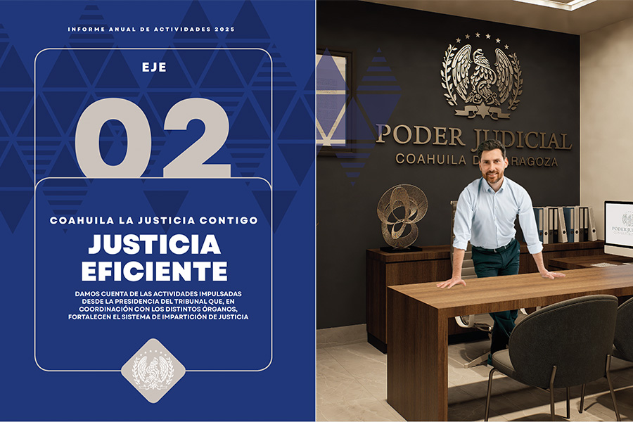
Eje 2 Justicia Eficiente
DAMOS CUENTA DE LAS ACTIVIDADES IMPULSADAS DESDE LA PRESIDENCIA DEL TRIBUNAL QUE, EN COORDINACIÓN CON LOS DISTINTOS ÓRGANOS, FORTALECEN EL SISTEMA DE IMPARTICIÓN DE JUSTICIA
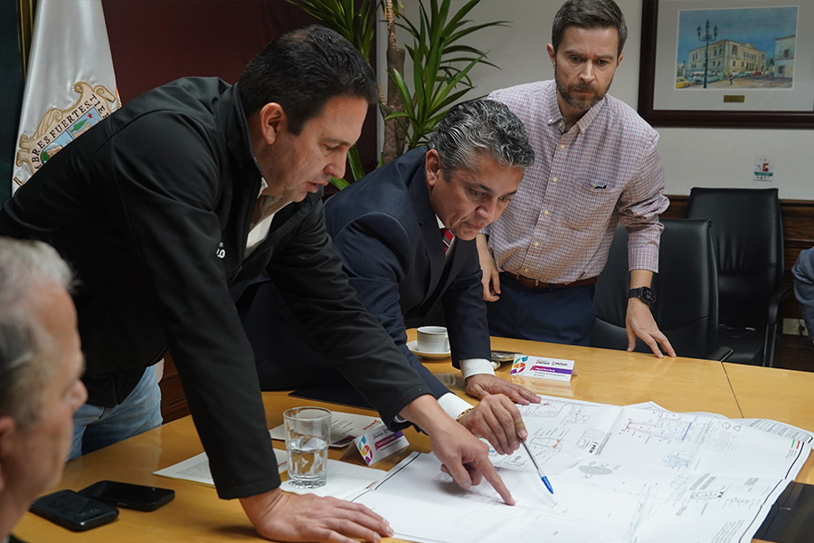
La confianza en la justicia se construye a partir de la integridad de quienes la hacen posible. No se trata únicamente de aplicar la ley, sino de ejercerla con rectitud, imparcialidad y pleno respeto a la dignidad y a los derechos humanos, tanto de las personas que acuden a los tribunales como de quienes operan el sistema. Solo así la legalidad adquiere sentido y legitimidad frente a la sociedad.
Con esta convicción, el Poder Judicial de Coahuila, por conducto del Consejo de la Judicatura, ha orientado su actuación a consolidar una cultura judicial basada en la ética pública, la transparencia y la rendición de cuentas. Estos principios guían el desempeño de quienes tienen la responsabilidad de impartir justicia, promoviendo una labor cercana, profesional e independiente, capaz de responder con sensibilidad y rigor a las demandas sociales, normativas y de carácter tecnológico.
Las acciones que se presentan en este apartado dan cuenta de un esfuerzo institucional dirigido a fortalecer la capacidad operativa del Poder Judicial y a actualizar su marco de actuación.
Para el logro del fortalecimiento institucional y en atención al compromiso de consolidar una justicia más cercana, moderna y colaborativa, durante el periodo que se informa, el Poder Judicial de Coahuila estableció sinergias estratégicas con otras instituciones para elevar la calidad del servicio judicial y llevarlo a todos los rincones del estado.
En un contexto de transformación nacional de las instituciones impartidoras de justicia, con el propósito de garantizar un servicio más eficiente, profesional, de calidad, accesible y confiable para la ciudadanía, desde la Presidencia de este Tribunal y los órganos de apoyo, trabajamos para fortalecer el sistema de justicia, con el desarrollo e implementación de un nuevo modelo de gestión judicial que operará inicialmente en la Ciudad Judicial de Saltillo, con el objetivo de mejorar la eficiencia y la calidad del servicio jurisdiccional y no jurisdiccional que se brinda a las personas que acuden a nosotros.
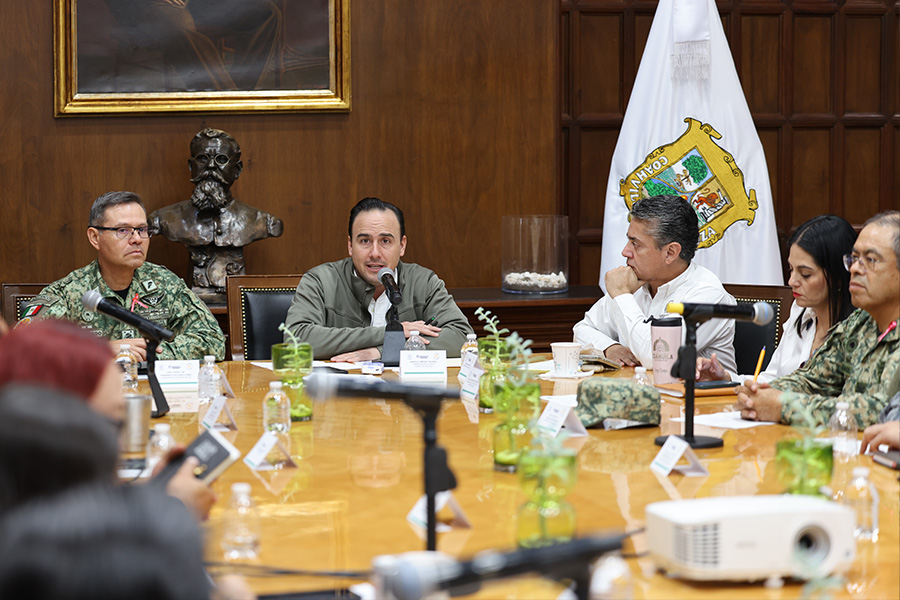
Participación en la Mesa de Coordinación para la Construcción de la Paz
A invitación del Poder Ejecutivo, durante este año, mantuvimos la participación en las Mesas de Coordinación para la Paz y la Seguridad, la cuales se han consolidado como una herramienta fundamental para la toma de decisiones conjuntas y la implementación de acciones legales que garanticen la paz, el orden y el desarrollo del Estado.
En este sentido, participamos en 200 reuniones ordinarias y 51 reuniones de titulares, en las que, desde la visión de las y los juzgadores aportamos lo que nos corresponde para la prevención del delito en la entidad, para diseñar estrategias de seguridad y procuración de justicia. En cada sesión se presentaron y analizaron indicadores clave del Sistema de Justicia Penal, como audiencias practicadas realizadas, órdenes de aprehensión ejecutadas, vinculaciones a procesos y otros índices relevantes al seguimiento penal.
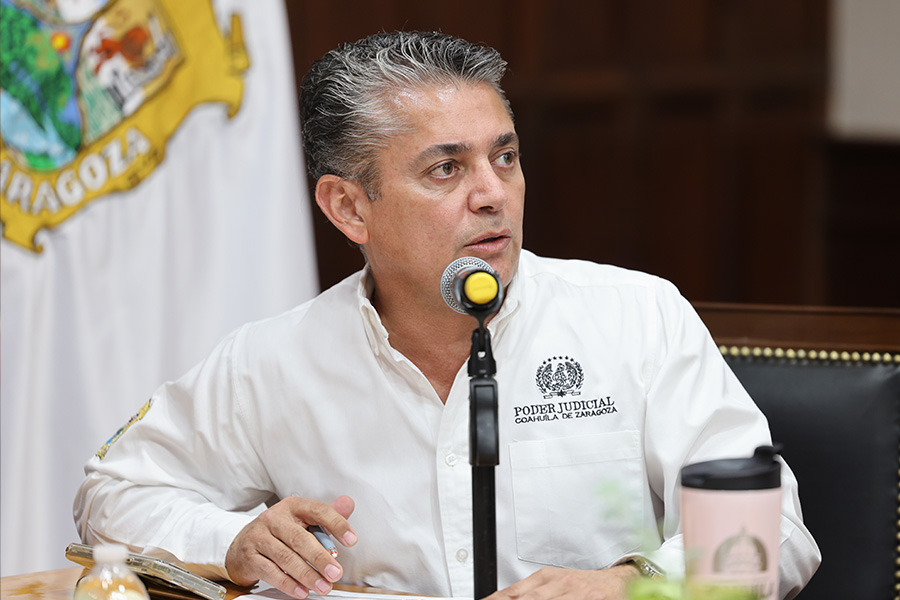
De esta manera, mantenemos el compromiso con el trabajo interinstitucional y la colaboración permanente para atender de manera oportuna los temas prioritarios en materia de seguridad pública, prevención del delito, y atención a las causas sociales que afectan a la ciudadanía, y garantizar la paz social y tranquilidad de la ciudadanía.
Pleno del Tribunal Superior de Justicia
El Tribunal Superior de Justicia del Estado, como órgano jurisdiccional, tiene entre sus funciones, tramitar y resolver los asuntos de su competencia, siempre apegados a los valores de honestidad, ética, imparcialidad, transparencia y el principio de legalidad, por lo que la rendición de cuentas no puede quedar exenta de cifras, pues es el reflejo del compromiso y trabajo que se realiza.
Durante este año, celebramos 33 sesiones públicas ordinarias, y derivado de ello, emitimos 181 acuerdos con el propósito de fortalecer el acceso pronto y expedito a la justicia de las y los usuarios, y el funcionamiento de los órganos jurisdiccionales y las áreas administrativas.
Asimismo, en el ejercicio que se informa y en cumplimiento a nuestras atribuciones, aprobamos la relación de 42 auxiliares de la administración de justicia en diversas materias y admitimos a trámite 17 procedimientos judiciales para obtener la patente de notario.
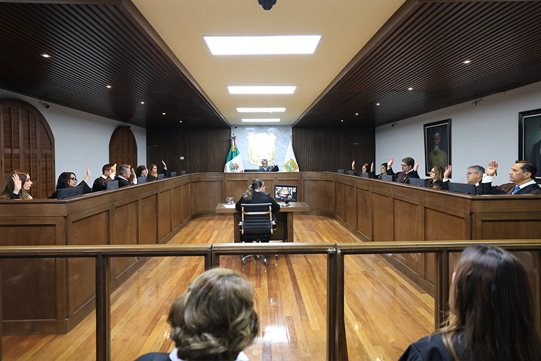
Además, integramos y atendimos 180 expedientes auxiliares, con motivo de peticiones de distintas autoridades administrativas y de la ciudadanía en general, así como requerimientos de la autoridad federal relativos a cuestiones derivadas de expedientes iniciados ante distintas entidades y órganos jurisdiccionales, en donde fueron emitidos mil 736 acuerdos de la Presidencia del Tribunal Superior de Justicia del Estado de Coahuila de Zaragoza.
En cuanto a la actividad jurisdiccional de este Pleno, resolvimos tres recursos de apelación con motivo de una sentencia emitida por la Sala Colegiada Civil y Familiar, nueve demandas de juicio de nulidad, 27 juicios de amparo, todas estas atendidas con estricto apego a la ley, transparencia y pleno respeto a los derechos de la ciudadanía.
En este periodo, iniciamos cuatro procedimientos administrativos disciplinarios ante el Pleno del Tribunal con motivo de la presentación de una queja de una persona usuaria ante la Secretaría General de Acuerdos del Tribunal Superior, así como un procedimiento adicional respecto al personal adscrito a la Presidencia del Tribunal.
En su función como Tribunal Constitucional, en el Pleno desempeñamos un papel de vigilancia del orden jurídico estatal. Durante el periodo que se informa, celebramos dos sesiones ordinarias en las que emitimos cuatro acuerdos, orientados a asegurar que las leyes y actos de autoridad mantengan plena concordancia con la Constitución.
Además, atendimos siete acciones de inconstitucionalidad, las cuales fueron acumuladas para su estudio, garantizando un análisis integral y coherente, y publicamos once acuerdos pronunciados, correspondientes a los distintos asuntos jurisdiccionales en trámite ante el Tribunal Constitucional Local.
Labores desarrolladas por la Secretaría General de Acuerdos del Pleno del Tribunal Superior de Justicia
La Secretaría General de Acuerdos del Pleno del Tribunal de Justicia desempeña un papel central en el funcionamiento cotidiano del Poder Judicial. Como instancia encargada de brindar apoyo técnico y operativo tanto a la Presidencia como al Pleno del Tribunal Superior de Justicia, permitiendo realizar con eficiencia, prontitud, responsabilidad y cercanía la actividad jurisdiccional.
En el año que se informa, en la Secretaría General de Acuerdos brindamos auxilio a distintas autoridades de la República Mexicana elaborando mil 251 exhortos, con la finalidad de ser diligenciados a los distintos distritos judiciales, y asistimos a autoridades extranjeras remitiendo 22 cartas rogatorias relativas a expedientes de distintos distritos judiciales.
Asimismo, recibimos 82 resoluciones de incompetencia de diversas entidades federativas con la finalidad de remitirlas a la autoridad competente en distintas materias de los órganos jurisdiccionales del estado, y 21 solicitudes de legalizaciones de firma por parte de las personas usuarias.
Adicionalmente, realizamos 59 notificaciones internas y 53 notificaciones externas dentro de los procedimientos, juicios y trámites efectuados en la Secretaría. De igual manera, en el presente ejercicio elaboramos 688 constancias a las y los solicitantes, correspondientes al registro del título de profesionales del derecho, para su acreditación ante los juzgados y salas del Tribunal, para que puedan ejercer como litigantes, y emitimos 31 constancias adicionales de registro de título, toda vez que resultaba necesaria la reposición para el ejercicio profesional del derecho.
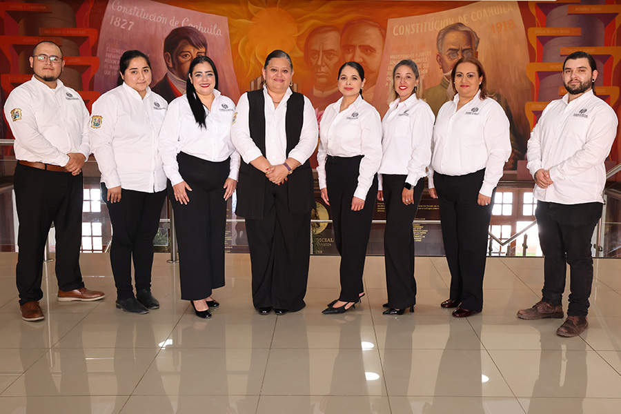
Consejo de la Judicatura
El Consejo de la Judicatura es un órgano de gobierno del Poder Judicial de Coahuila, a cargo de las funciones de administración, vigilancia, carrera judicial y disciplina de la institución, y está conformado por seis personas consejeras, incluyendo al presidente del Tribunal Superior de Justicia, una persona juzgadora de primera instancia, una Magistratura del Tribunal Superior de Justicia y una persona designada por el Poder Ejecutivo y otra por el Poder Legislativo, para asegurar representación y equilibrio.
Durante 2025, nuestra responsabilidad se tradujo en avances concretos que fortalecen el respeto a los derechos humanos y garantizan que la justicia en Coahuila sea cada vez más pronta, expedita y accesible para todas las personas.
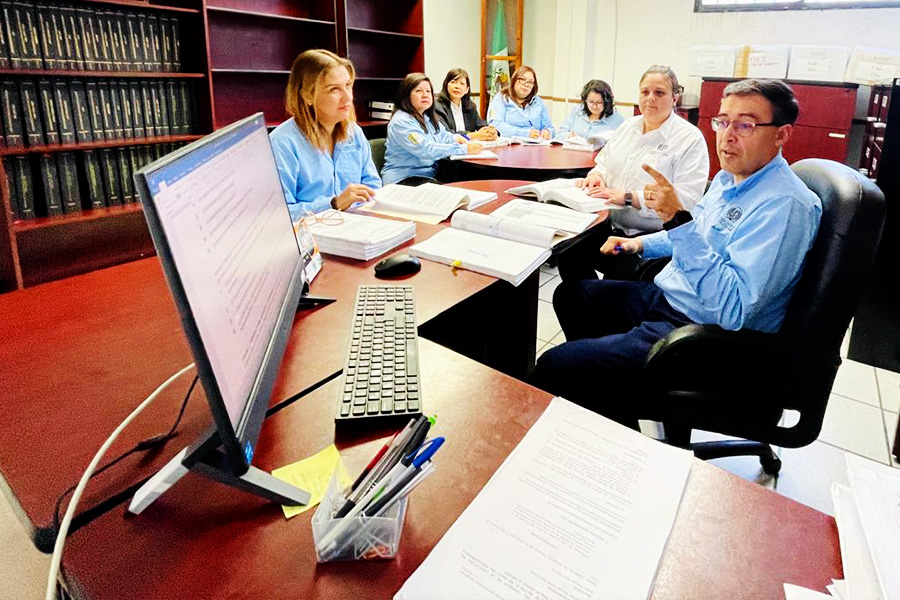
Nuestra actuación garantiza el desarrollo ordenado, transparente y eficiente de las funciones jurisdiccionales y administrativas, bajo principios de legalidad, objetividad, profesionalismo y rendición de cuentas. Cada acción emprendida responde a una convicción compartida: la justicia debe ser humana, eficaz y estar al alcance de todas y todos.
Con esta visión, el Consejo de la Judicatura continúa construyendo un Poder Judicial más sólido, íntegro y comprometido con el bienestar de la sociedad coahuilense, en coordinación con el Órgano de Administración Judicial y el Tribunal de Disciplina Judicial, que conforme a las reformas federales y locales de 2024 asumirán de manera gradual las funciones del mismo hasta su extinción.
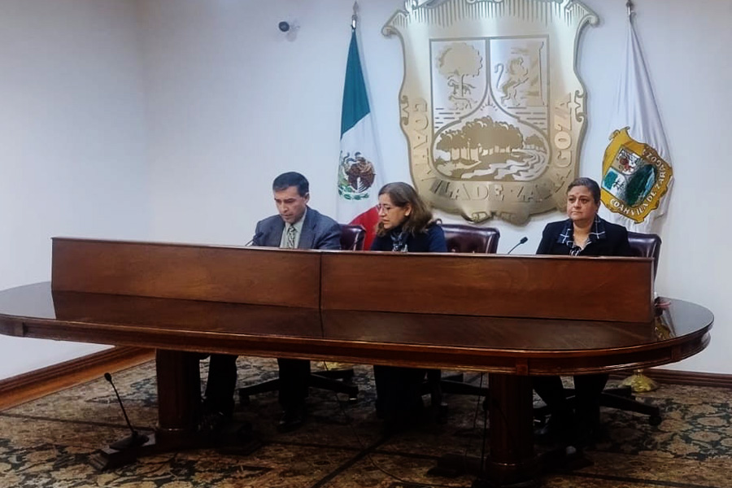
Durante el periodo que se informa, el Pleno del Consejo sostuvo sesiones ordinarias y extraordinarias en las que se deliberaron, aprobaron y supervisaron políticas y decisiones estratégicas en materia de gestión judicial, disciplina, evaluación de desempeño, nombramientos, adscripciones, implementación de reformas, así como temas relacionados con infraestructura, tecnologías de la información y recursos humanos. Su trabajo colegiado ha sido clave para asegurar la estabilidad institucional y para avanzar en la consolidación de una justicia moderna, accesible y centrada en las personas.
1. Rubro de administración
Impulsamos diversas medidas orientadas a mejorar la calidad del servicio, el acceso a la justicia y una mejor eficiencia operativa que permita a las personas usuarias contar un poder judicial funcional y orientado a la mejora permanente.
En el año que se informa, emitimos diversos acuerdos en cada uno de los rubros que desempeña las actividades del Consejo de la Judicatura, de las cuales se destacan las siguientes:
Tabla 25. Acuerdos en diversos rubros en los ejes de trabajo del Poder Judicial
| Acuerdo | Fecha | Objetivo |
|---|---|---|
| Acuerdo del Consejero Presidente ratificado por el Pleno del Consejo de la Judicatura | 16 de enero 2025 | Aprobamos el calendario de visitas judiciales e inspecciones administrativas a los órganos jurisdiccionales, no jurisdiccionales y administrativos. Además, establecimos que dichos órganos deben rendir un informe respecto a dichas visitas. |
| Acuerdo C-020/2025 | 31 de enero de 2025 | Por el que se determina la gratuidad de las consultas a los expedientes que se encuentran resguardados en el Archivo Judicial General, en los Archivos Distritales y únicos del Poder Judicial del Estado de Coahuila de Zaragoza, con la finalidad de garantizar el acceso a la justicia a las personas de forma gratuita. |
| Acuerdo C-021/2025 | 31 de enero de 2025 | Aprobamos la modificación de las personas integrantes del Comité de Transparencia del Poder Judicial del Estado de Coahuila de Zaragoza. |
| Acuerdo del Consejero Presidente ratificado por el Pleno del Consejo de la Judicatura | 06 de febrero de 2025 | Aprobamos la forma en la que los juzgados civiles de primera instancia enviarán los expedientes para emitir la resolución correspondiente a efecto de desahogar la carga de trabajo en los juzgados de los distritos judiciales de Saltillo y Torreón. |
| Acuerdo C-067/2025 | 27 de febrero de 2025 | Aprobamos la implementación del Sistema Digital de Gestión de Documentos de Archivo (SIGDDA) en la Sala Regional, Tribunales Distritales y en los Tribunales Laborales, con el objetivo de iniciar con los registros de expedientes de manera digital. Además, aprobamos el calendario de entrega de remesas a los archivos judiciales. |
| Acuerdo C-087/2025 | 27 de marzo de 2025 | Formalizamos la elaboración de las sentencias en formato de lectura fácil para aquellas personas que tengan discapacidad intelectual. Asimismo, aprobamos que las sentencias se traduzcan al sistema de escritura braille, para que las personas con discapacidad visual puedan tener acceso a las decisiones de asuntos en los que intervienen. |
| Acuerdo del Consejero Presidente ratificado por el Pleno del Consejo de la Judicatura | 11 de abril de 2025 | Aprobamos el inicio de las funciones de la Jueza Auxiliar Familiar del Distrito Judicial de Torreón, como apoyo en el desahogo de la carga de trabajo en los órganos de la materia. |
| Acuerdo C-126/2025 | 29 de mayo de 2025 | Aprobamos la supresión del Juzgado de Primera Instancia Auxiliar Civil en el Estado de Coahuila de Zaragoza y que los expedientes a cargo de dicho juzgado pasaran al Juzgado de Primera Instancia en Materia Civil Auxiliar con Especialización Ambiental. |
| Acuerdo C-144/2025 | 26 de junio de 2025 | Validamos el procedimiento de baja documental de los documentos de comprobación inmediata y de apoyo informativo de los órganos del Poder Judicial, así como la depuración de documentos que ya cumplieron su ciclo vital. |
| Acuerdo C-145/2025 | 26 de junio de 2025 | Dimos vista al Cuadro General de Clasificación Archivística, el Catálogo de Disposición Documental y el Manual de Procedimientos para las transferencias documentales, herramientas de control documental archivístico que nos permiten contar con archivos depurados y solo con documentos de archivo de trámite. |
| Acuerdo C-163/2025 | 18 de julio de 2025 | Autorizamos el auxilio gradual de la Central de Actuarios del Distrito Judicial de Saltillo en la labor actuarial del Tribunal Laboral y los juzgados en materia civil y familiar de este Distrito Judicial. |
| Acuerdo C-164/2025 | 18 de julio de 2025 | Aprobamos la creación del Protocolo de Actuación para Garantizar el Acceso a la Justicia a las Personas con Discapacidad, el cual sirve de apoyo a las personas juzgadoras para tener un margen de actuación cuando en los juicios que dirigen, una persona con una discapacidad es parte. |
| Acuerdo del Consejero Presidente ratificado por el Pleno del Consejo de la Judicatura | 30 de septiembre de 2025 | Ampliamos las funciones auxiliares en materia familiar del Poder Judicial en el Distrito Judicial de Torreón, con la finalidad de desahogar la carga de trabajo en los juzgados. |
Fuente: Secretaría General de Acuerdos del Consejo de la Judicatura del Estado de Coahuila de Zaragoza. 2025.
2. Rubro de vigilancia, acciones desarrolladas por la Visitaduría Judicial General
La supervisión permanente constituye un eje fundamental para asegurar la calidad del desempeño de los órganos jurisdiccionales y no jurisdiccionales del Poder Judicial de Coahuila. Es a través de la revisión objetiva al trabajo de las y los juzgadores, personal de apoyo y de las áreas administrativas vinculadas, que podemos consolidar un poder judicial eficiente y comprometido con las demandas de la sociedad.
Esta tarea, a cargo de la Visitaduría Judicial General, tiene la finalidad de garantizar que la impartición de justicia se realice conforme a los principios que rigen a este poder público, identificando áreas de oportunidad para fortalecer los procesos judiciales y enfocar nuestra atención en mejorar el actuar de quienes lo integramos.
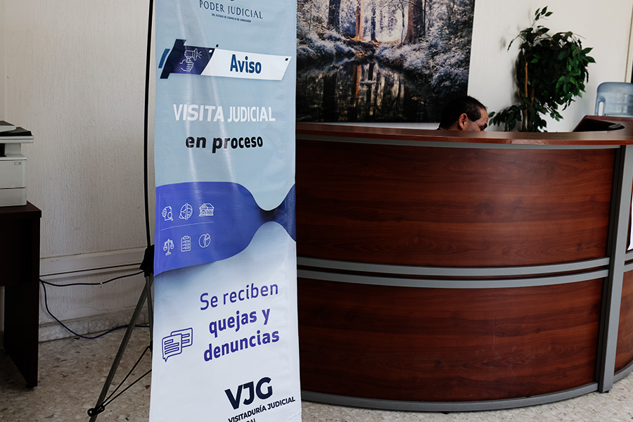
Llevamos acciones de revisión y vigilancia a los órganos jurisdiccionales de primera instancia, al Centro de Medios Alternos y de Solución de Controversias, al Centro de Evaluación Psicosocial, al Instituto Estatal de Defensoría Pública, al Archivo Judicial General, las Centrales de Actuarios, y las Oficialías de Partes y, a partir del tercer trimestre del año incorporamos estas labores de supervisión a los órganos jurisdiccionales de segunda instancia.
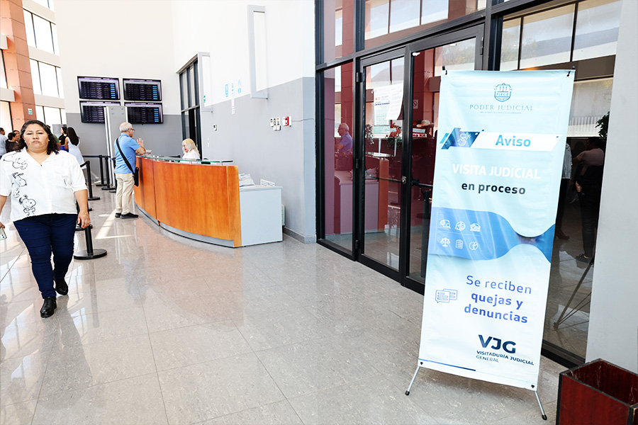
Durante 2025, realizamos 180 visitas judiciales e inspecciones administrativas, comprendiendo modalidades ordinarias, extraordinarias y ejercicios especiales. Asimismo, supervisamos 50 procesos de entrega-recepción. Con estas diligencias verificamos el cumplimiento de las obligaciones funcionales, detectamos aspectos susceptibles de mejora y emitimos las recomendaciones correspondientes, conforme a los lineamientos establecidos por el Consejo de la Judicatura.
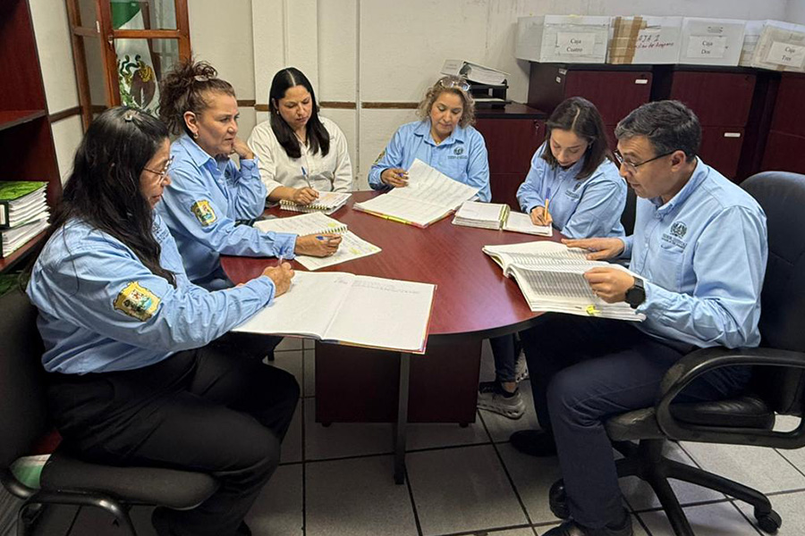
Las y los visitadores efectuaron entrevistas al personal adscrito a las distintas áreas, a fin de identificar las tareas que desempeñan conforme a las asignaciones otorgadas por la persona titular del órgano correspondiente, así como las dinámicas de trabajo y los mecanismos internos que emplean para cumplir con sus responsabilidades.
Lo anterior nos permitió recabar información valiosa sobre la distribución de funciones, cargas laborales, procedimientos administrativos y la coordinación entre las distintas áreas que intervienen en la tramitación y resolución de los asuntos. Asimismo, recibimos 60 quejas y denuncias por parte de personas usuarias y litigantes, quienes compartieron sus experiencias en torno a la atención recibida, los tiempos de respuesta, el acceso a la información y el trato por parte del personal jurisdiccional.
En el marco de las labores de supervisión documental, llevamos a cabo tres mil 500 revisiones de libros físicos y electrónicos, con el objetivo de verificar su correcta integración, actualización y resguardo. De igual manera, analizamos dos mil 600 expedientes judiciales, lo que nos permitió constatar el cumplimiento de los plazos procesales, la adecuada fundamentación de las resoluciones y la congruencia de las actuaciones. A ello se sumó la revisión de mil 200 documentos complementarios, entre los que se encuentran dictámenes e informes elaborados por las áreas de psicología y trabajo social, expedientes de mediación, boletas de notificación y remesas de expedientes enviados al Archivo Judicial General.
Estas acciones tuvieron como finalidad evaluar de manera integral el desarrollo de las funciones jurisdiccionales y administrativas, así como detectar posibles deficiencias en los procedimientos, omisiones en el registro documental o cualquier otra situación que pudiera afectar el adecuado funcionamiento de los órganos visitados.
3. Rubro de disciplina
La cultura de la legalidad y de ética resulta fundamental para que este poder público garantice que cada persona servidora pública actúe con estricto apego a los valores de legalidad, honradez, eficiencia, disciplina, rendición de cuentas, integridad y profesionalismo.
El ejercicio disciplinario que hasta ahora ha encabezado el Consejo de la Judicatura es una herramienta fundamental para asegurar que el servicio judicial se preste con honradez y sentido de responsabilidad. Al investigar las faltas, aplicar las sanciones previstas en la ley y corregir conductas que vulneran el quehacer jurisdiccional, combatimos la negligencia y se protege el correcto funcionamiento de este poder público. De este modo, se salvaguarda no solo el desempeño del personal judicial, sino también el derecho de la sociedad a una justicia de calidad, eficiente, confiable y a la altura de sus expectativas.
Como resultado, durante el periodo que se informa, recibimos 196 denuncias y quejas presentadas por personas justiciables, las cuales fueron analizadas con seriedad y apego al debido proceso, de éstas, 52 se encuentran en trámite y 37 derivaron en resoluciones a diversas personas servidoras públicas. Cada una de estas actuaciones contribuyó a fortalecer la transparencia y a consolidar la confianza ciudadana en la impartición de justicia.
Tabla 26. Expedientes administrativos y auxiliares resueltos
| Actividad | 2025 |
|---|---|
| Definitivas | 37 |
| Inicio de procedimientos en contra de dos o más personas servidoras públicas. | 19 |
| No inicio de procedimiento | 37 |
| Improcedentes | 138 |
| Sin materia | 44 |
| Falta de competencia | 5 |
| Prescripción | 4 |
| Se desecha el escrito de queja | 4 |
| Total | 288 |
Fuente: Consejo de la Judicatura del Estado de Coahuila de Zaragoza. 2025.
Tabla 27. Sanciones impuestas por el Consejo de la Judicatura
| Actividad | 2025 |
|---|---|
| Apercibimiento | 2 |
| Amonestaciones | 0 |
| Suspensión | 2 |
| Destitución | 5 |
| Absolutorias | 28 |
| Multas | 0 |
| Total | 37 |
Fuente: Consejo de la Judicatura del Estado de Coahuila de Zaragoza. 2025.
Tabla 28. Expedientes administrativos atendidos
| Actividad | 2025 |
|---|---|
| Asuntos recibidos | 196 |
| Expedientes en trámite | 52 |
| Resoluciones definitivas | 37 |
| Total | 285 |
Fuente: Consejo de la Judicatura del Estado de Coahuila de Zaragoza. 2025.
3.1 Expedientes auxiliares disciplinarios
A lo largo de 2025, radicamos 20 expedientes auxiliares, los cuales se encuentran concluidos en su totalidad.
3.2 Atención a juicios de amparo en asuntos disciplinarios
Asimismo, en el periodo señalado, dimos atención y tramitación a los juicios de amparo en los que el Consejo de la Judicatura fue señalado como la autoridad responsable. Actualmente, se concentran 44 asuntos, 20 corresponden a juicios iniciados en el presente año.
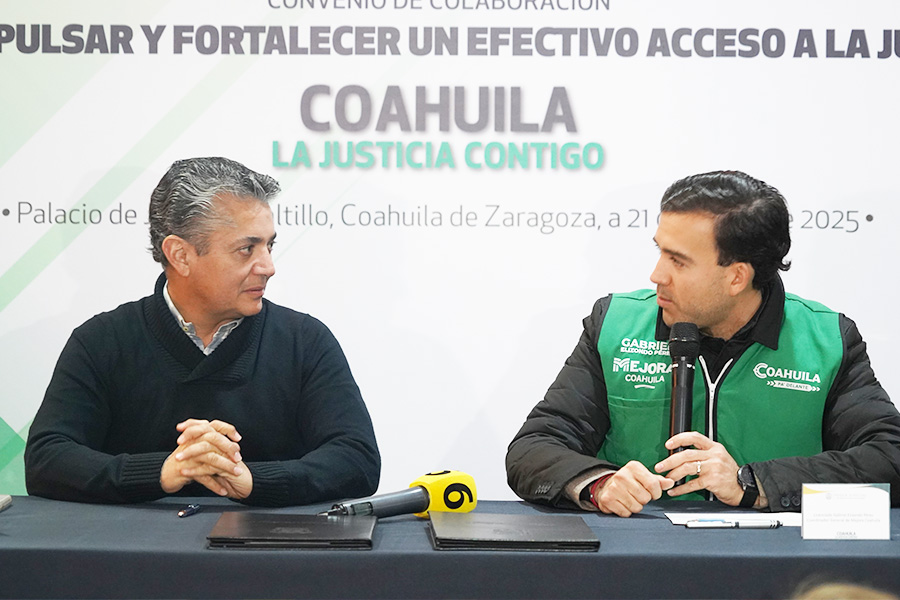
Vinculación Interinstitucional
La construcción de un sistema de justicia cercano y eficaz requiere del trabajo conjunto y de la suma de voluntades. En ese sentido, generar sinergias de coordinación, colaboración y cooperación con instituciones públicas, así como con organizaciones de la sociedad civil, resulta indispensable para atender de manera efectiva las necesidades y expectativas de las y los justiciables, al tiempo que se fortalece el Estado de Derecho y se contribuye a la paz social.
De igual forma, refrendamos nuestra disposición permanente para trabajar de manera articulada con el Poder Ejecutivo y el Poder Legislativo, impulsando reformas que respondan a la realidad social que vive nuestro estado. Nuestro compromiso es que estos cambios trasciendan el ámbito normativo y se reflejen en acciones concretas que amplíen y mejoren el acceso a la justicia para la sociedad coahuilense, con especial atención a quienes se encuentran en condiciones de mayor vulnerabilidad.
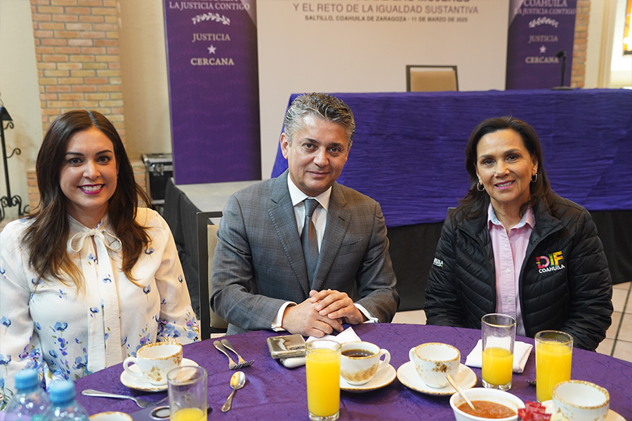
A través de alianzas estratégicas y convenios de colaboración, promovemos una cultura de respeto a los derechos humanos y sentamos las bases de un estado en el que todas las personas puedan ejercer su derecho a la justicia sin distinción alguna. Asimismo, impulsamos una cultura de paz y la resolución pacífica de los conflictos, fortalecemos un modelo de justicia abierta con perspectiva de género, consolidamos la justicia alternativa en la entidad y fomentamos el intercambio de buenas prácticas para robustecer a los tribunales de justicia.
En ese sentido, durante este 2025, con la convicción de acercar la justicia a la vida cotidiana de las y los coahuilenses, formalizamos un convenio de colaboración con Mejora Coahuila, orientado a fortalecer el acceso efectivo a servicios legales para quienes lo requieran. Este acuerdo representa un paso firme para que los procedimientos jurídicos dejen de ser lejanos y se conviertan en una herramienta al alcance de la población.
El convenio se sustentó en tres ejes fundamentales. En primer lugar, la difusión y fortalecimiento de los mecanismos de justicia alternativa y mediación, como vías para fomentar la solución pacífica de conflictos y promover acuerdos construidos por las propias personas involucradas, desde sus comunidades. En segundo lugar, la canalización directa de quienes necesiten asesoría, orientación o representación legal al Centro de Justicia Integral, con el propósito de que estos servicios lleguen de manera oportuna y equitativa a todas las regiones del estado. Finalmente, lo complementa la atención inmediata, sensible y cercana de las problemáticas más urgentes en materias civil, familiar, mercantil, penal y de justicia para adolescentes, con el fin de eliminar barreras y facilitar el ejercicio pleno de un derecho fundamental.
Por otra parte, signamos un convenio de colaboración con el DIF Coahuila, la Secretaría de Educación del Estado de Coahuila y la Fiscalía General del Estado para realizar el programa “Impulsores de Paz”, con el objetivo de fomentar, a través de valores, actitudes y comportamientos como el respeto, tolerancia, igualdad, comprensión, solidaridad o diálogo, la convivencia sana, pacífica, inclusiva y democrática de la cultura de paz y mediación escolar.
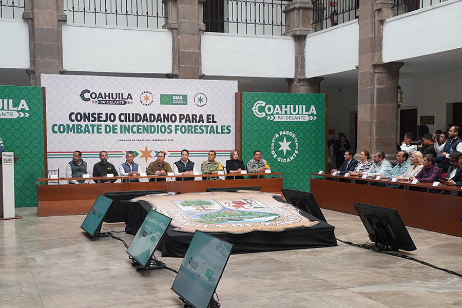
El programa contempla dos componentes fundamentales: Mediación Escolar, con el que se busca atender y resolver conflictos escolares de forma pacífica, justa y participativa, ayudando a prevenir la violencia y mejorando el ambiente en los centros educativos; y Escuela para Padres, en la cual ofrecemos espacios de aprendizaje y reflexión, donde madres y padres desarrollan habilidades para fortalecer la comunicación con sus hijos, promover valores y crear entornos familiares saludables.
Como resultado de este programa, en conjunto se han formado 344 alumnos y 227 docentes y directivos en conocimientos en mediación escolar y cultura de paz.
Participación en la Comisión Nacional de Tribunales Superiores de Justicia de los Estados Unidos Mexicanos y en la Unidad de Derechos Humanos e Igualdad de Género
La Comisión Nacional de Tribunales Superiores de Justicia de los Estados Unidos Mexicanos (CONATRIB) integra a las presidencias de los 32 Tribunales Superiores de Justicia del país y funge como un espacio de coordinación, intercambio y fortalecimiento institucional. Su labor se centra en impulsar la modernización, profesionalización y armonización de criterios para mejorar la impartición de justicia a nivel nacional.
Como parte de este organismo, participamos activamente en los trabajos colectivos aportando experiencias, buenas prácticas y propuestas desde Coahuila. Asimismo, colaboramos en comisiones especializadas y compartimos los avances de nuestras iniciativas, contribuyendo a la construcción de estándares comunes y al fortalecimiento de la justicia en todo el país.
Este 2025, asistimos a las Asambleas Ordinarias Plenarias en Veracruz, Quintana Roo y Jalisco, en esta última, el Magistrado Presidente Miguel Felipe Mery Ayup realizó la presentación sobre el avance de la Unidad de Derechos Humanos e Igualdad de Género y entregó, en su carácter de Magistrado Decano de la Comisión, un reconocimiento al Magistrado Presidente Rafael Guerra Álvarez por su gestión al frente de este órgano, destacando su contribución en beneficio de los tribunales superiores de justicia de los estados.
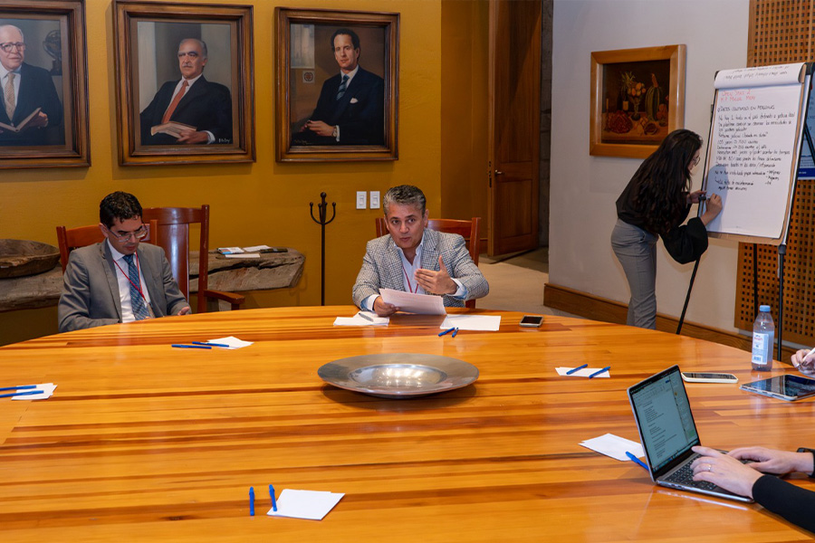
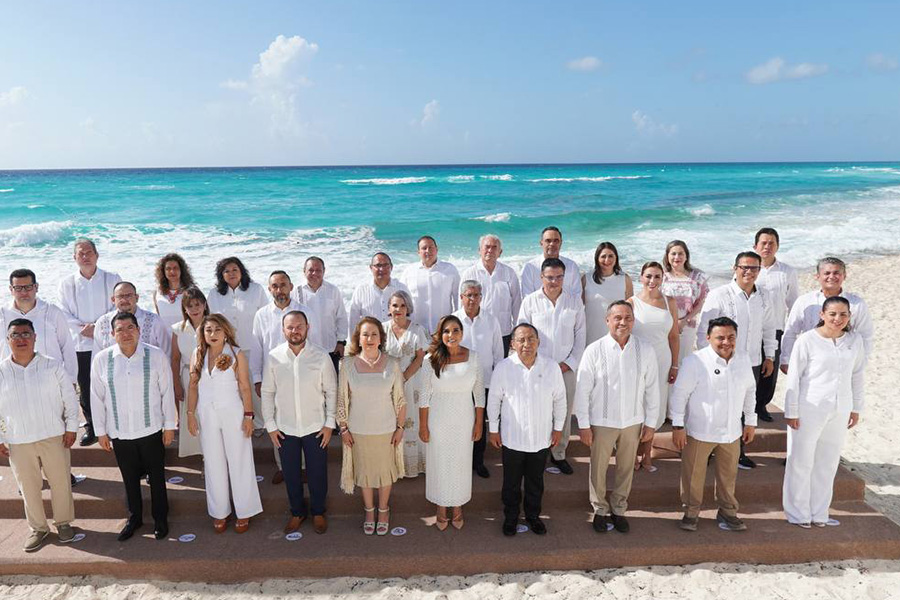
Durante el año, en colaboración con la Red Nacional de Mecanismos Alternativos de Solución de Controversias (MASC) de la CONATRIB, finalizamos la capacitación a nivel nacional de 764 personas facilitadoras de las 32 entidades de la república mexicana, certificándolas en perspectiva de género, garantizando procesos seguros y fortaleciendo la legitimidad institucional de los Centros de Medios Alternos de Solución de Controversias a nivel nacional.
Continuando con nuestras acciones de colaboración nacional y atención a los mecanismos internacionales de seguimiento en temas de género, colaboramos con la Suprema Corte de Justicia de la Nación en la coordinación de las acciones de las Unidades de Derechos Humanos e Igualdad de Género de la CONATRIB, y apoyamos en el proceso de sustentación del X Informe de México ante el Comité para la Eliminación de la Discriminación contra la Mujer (CEDAW) que se llevó a cabo en el mes de junio.
En congruencia con nuestro compromiso permanente con la promoción y protección de los derechos humanos, participamos en el Comité Directivo del Mecanismo de Seguimiento y Evaluación del Programa Nacional para Prevenir, Investigar y Sancionar la Tortura y Otros Tratos o Penas Crueles, Inhumanos o Degradantes, mediante el cual colaboramos con diversas instituciones a nivel nacional para implementar acciones definidas y transversales en la prevención, investigación, sanción y erradicación de la tortura.
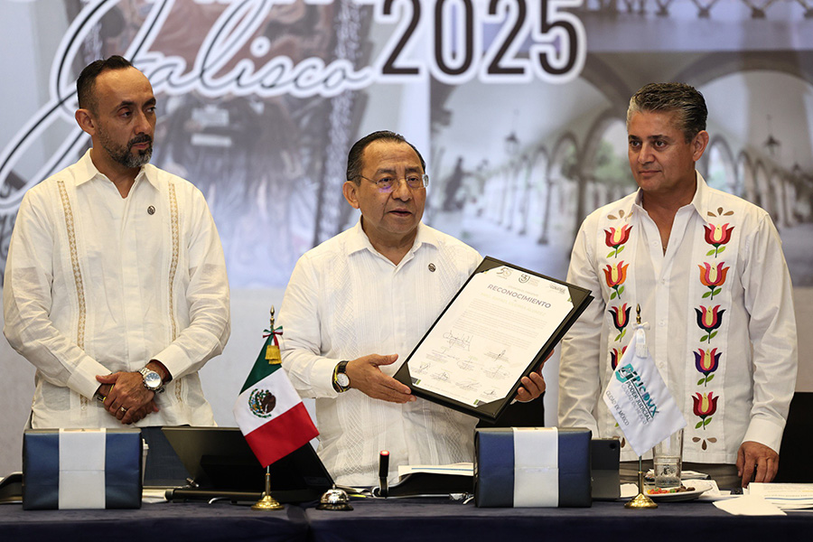
Con la intención de potenciar el conocimiento institucional y la transferencia de buenas prácticas, llevamos a cabo los Conversatorios sobre Buenas Prácticas con las Unidades, Coordinaciones y Direcciones de Derechos Humanos e Igualdad de Género de los Tribunales de la CONATRIB. En este espacio contamos con la participación de 18 entidades y se abordaron temas como las nuevas masculinidades, los sistemas de cuidados, la participación de las niñas y los niños, la comunicación efectiva, entre otros.
Participación en el Sistema Estatal Anticorrupción
Ante una ciudadanía que demanda un gobierno más accesible, abierto y eficiente, la colaboración entre dependencias y organismos públicos es esencial para aumentar la confianza de la población en sus instituciones, por lo que participamos en cuatro sesiones ordinarias y tres extraordinarias del máximo órgano de gobierno, emitiendo un total de 25 acuerdos. Mientras que, como parte del Comité Coordinador del Sistema Estatal Anticorrupción, asistimos a 12 sesiones ordinarias en donde generamos 17 acuerdos en total.
En este marco, en el Poder Judicial de Coahuila asumimos el compromiso institucional de fortalecer la transparencia, por lo que integramos un perfil académico y técnico al Comité de Transparencia, lo que nos ha permitido asegurar que la ciudadanía tenga acceso a la información pública de manera objetiva, clara y conforme a la ley.
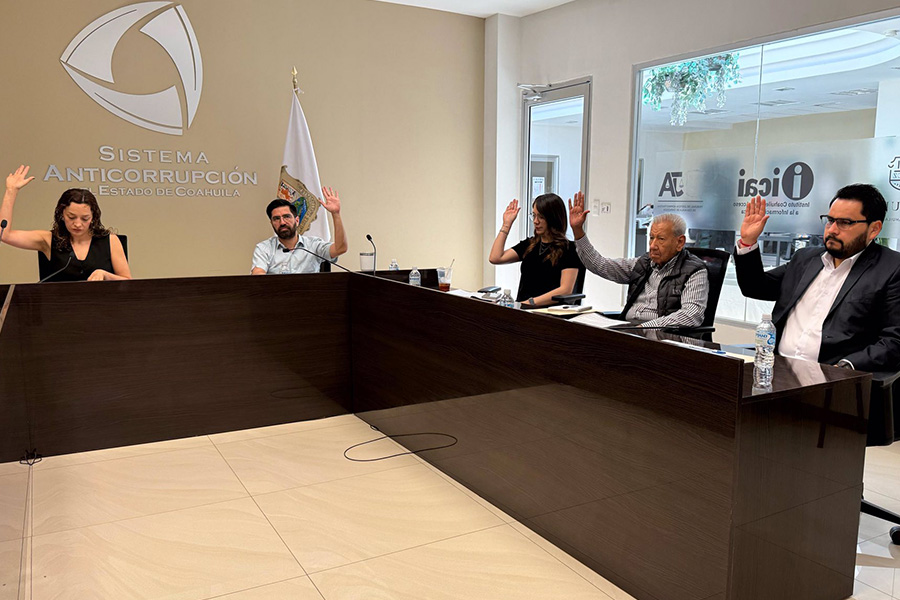
Actividades de la Presidencia del Tribunal Superior de Justicia
La Ley Orgánica de este poder público establece las facultades del Presidente del Tribunal Superior de Justicia del Estado como representante del Poder Judicial del Estado y en ese sentido el Magistrado Miguel Felipe Mery Ayup desarrolló las siguientes actividades:
Tabla 29. Actividades sostenidas por el titular de la Presidencia del Tribunal Superior de Justicia del Estado
| Reuniones, eventos y recorridos |
|---|
| Asistencia a la toma de protesta ciudadana de Javier Díaz González como Alcalde de la Ciudad de Saltillo |
| Entrega de Patrullas Eléctricas en el Día Internacional del Policía |
| Toma de Protesta de los integrantes del Comité de Evaluación del Poder Judicial, quienes determinaron la elegibilidad e idoneidad de aspirantes a los cargos de personas juzgadoras y magistraturas |
| Firma de Convenio de colaboración con el Coordinador General de Mejora Coahuila para impulsar y fortalecer un efectivo acceso a la justicia |
| Sesión Solemne del Informe Anual de Actividades correspondientes al año 2024 |
| Asistencia al programa “Fuerte y Claro” de Grupo Región para difundir a la ciudadanía los resultados en la impartición de justicia |
| Entrevista en Telediario Laguna respecto a la impartición de justicia y retos del Poder Judicial |
| Sesión Solemne para conmemorar el 112 aniversario del Día del Ejército Mexicano en el Congreso del Estado |
| Acompaña al Gobernador Constitucional del Estado, Manolo Jiménez Salinas, en la ceremonia cívica en conmemoración del Día de la Bandera |
| Asistencia a la reunión informativa mensual de socios de COPARMEX Coahuila con el tema “Implicaciones de la Reforma al Poder Judicial” |
| Asistencia a la instalación del Consejo Ciudadano para el Combate de Incendios Forestales |
| Entrega del premio y reconocimiento a Natalia Cisneros Mireles, ganadora del concurso “Diseña nuestro personaje”, a fin de fomentar la cultura de la legalidad en las niñas, niños y adolescentes |
| Asistencia a la reunión de la Unión de Organismos Empresariales de Coahuila Sureste |
| Presentación de resultados y avances en la estrategia integral de las mujeres coahuilenses en el marco de la conmemoración del Día Internacional de la Mujer |
| Imparte conferencia dirigida al personal de la Universidad Autónoma de Coahuila con el tema: Contenido e Implicaciones de la Reforma al Poder Judicial |
| Acompaña al Gobernador Constitucional del Estado Manolo Jiménez Salinas en la inauguración del Centro de Atención a Mujeres y Refugio Estatal para Mujeres |
| Asistencia a la reunión con la Asociación de Licenciadas en Derecho y la Ingeniera Liliana Salinas Valdés, Presidenta Honoraria del DIF Coahuila, con motivo del Día Internacional de la Mujer |
| Conversatorio con el personal del Instituto Estatal de la Defensoría Pública y presentación de la nueva imagen institucional |
| Asistencia a la sesión informativa mensual de socios de la COPARMEX Piedras Negras con el tema: “Implicaciones en Coahuila de la Reforma al Poder Judicial” |
| Asistencia a la Facultad de Administración y Contaduría y Derecho, de la Universidad Autónoma de Coahuila, campus Piedras Negras, para dialogar con académicos y estudiantes de las carreras de derecho, contaduría y administración sobre las “Implicaciones de la Reforma al Poder Judicial” |
| Conversatorio con el personal del Instituto Estatal de la Defensoría Pública de la Delegación Piedras Negras y presentación de la nueva imagen institucional |
| Asistencia a la Escuela de Medicina de la Universidad Autónoma de Coahuila con sede en Piedras Negras para dialogar con académicos y estudiantes sobre las “Implicaciones de la Reforma al Poder Judicial” |
| Conversatorio con personas notarias de Coahuila sobre las “Implicaciones de la Reforma al Poder Judicial” |
| Reunión de trabajo con el Lic. Javier Díaz González, Alcalde de Saltillo, para revisar las acciones que se implementarán en cuestiones de seguridad y movilidad de las personas usuarias que acudan a la Ciudad Judicial Saltillo |
| Asistencia a la Mesa de Coordinación Estatal para la Construcción de la Paz y la Seguridad con participación de los tres niveles de gobierno |
| Presentación del libro “Medidas Cautelares en el Proceso Penal”, escrito por la Dra. Carla Pratt, en compañía del Dr. Eduardo Osorio y el Dr. Miguel Carbonell |
| Dirige el mensaje conmemorativo del 112 aniversario de la Promulgación del Plan de Guadalupe |
| Recibe en el Pleno del Tribunal Superior de Justicia a las y los alumnos de la carrera de Derecho de la Universidad La Salle |
| Asistencia a la Primera Asamblea Plenaria Ordinaria de la Comisión Nacional de Tribunales Superiores de Justicia (CONATRIB), en Veracruz |
| Entrevista en el programa “La Resistencia” con Marcos Durán, Enrique Crown y Teresa Quiroz |
| Conversatorio con juezas y jueces en materia familiar del Distrito Judicial de Torreón |
| Asistencia a la Mesa de Coordinación Estatal para la Construcción de la Paz y la Seguridad con participación de los tres niveles de gobierno |
| Sesión del Segundo Pleno Infantil del Tribunal Superior de Justicia, el cual fue inaugurado por el Magistrado Presidente |
| Acompaña al Gobernador Constitucional del Estado Manolo Jiménez Salinas en la Conmemoración del Día Internacional del Trabajo |
| Presentación de la Constitución Política del Estado de Coahuila de 1852, junto a la Diputada Luz Elena Morales, Presidenta de la Junta de Gobierno del Congreso del Estado y Alberto Cortines, Director de Comunicación Social del Congreso del Estado |
| Acompaña al Gobernador Constitucional del Estado Manolo Jiménez Salinas en el Abanderamiento de la Delegación Coahuilense para la Olimpiada CONADE 2025 |
| Acompaña al Gobernador Constitucional del Estado Manolo Jiménez Salinas a la firma del “Pacto Coahuila 2025” |
| Asistencia a la Segunda Asamblea Plenaria Ordinaria de la Comisión Nacional de Tribunales Superiores de Justicia (CONATRIB) en Quintana Roo |
| Develación del muro de los nombres de Magistradas y Magistrados de Coahuila en el Palacio de Justicia de Saltillo |
| Toma de protesta de las y los Magistrados del Tribunal Superior de Justicia, del Tribunal de Disciplina y de los Tribunales Distritales, así como de personas juzgadoras de primera instancia |
| Instalación del Pleno del Tribunal Superior de Justicia y elección del Magistrado Miguel Felipe Mery Ayup como Presidente del Tribunal Superior de Justicia del Estado |
| Reunión de trabajo con personal jurisdiccional y administrativo del Distrito Judicial de Monclova |
| Entrevista en Telediario Laguna |
| Entrevista en los noticieros En La Mira y Tele Zócalo vespertino |
| Reunión de trabajo con personas juzgadoras y personal administrativo del Distrito Judicial de la Región Carbonífera |
| Acompaña al Gobernador Constitucional del Estado Manolo Jiménez Salinas en la ceremonia de conmemoración del Grito de Independencia |
| Acompaña al Gobernador del Estado Manolo Jiménez Salinas al Desfile conmemorativo del 215 Aniversario del inicio de la Independencia de México |
| Encabeza ciclo de conferencias y trabajos en conmemoración del XX Aniversario del Centro de Medios Alternos de Solución de Controversias |
| Participación en el espacio de diálogo organizado por la Asociación Espacio Justo y la Cooperación Técnica Alemana para difundir la importancia de los datos e información para la garantía de los derechos humanos y el acceso a la justicia |
| Asistencia a la reunión de Coordinación Estatal para la Construcción de la Paz y Seguridad con participación de los tres niveles de gobierno |
| Recibe la visita de estudiantes de la carrera de Derecho de la Facultad de Administración, Contaduría y Derecho de la Universidad Autónoma de Coahuila |
| Gira de trabajo a los Distritos Judiciales de Acuña, Monclova, Piedras Negras y Región Carbonífera |
| Asistencia a la Tercer Asamblea Plenaria Ordinaria de la Comisión Nacional de Tribunales Superiores de Justicia (CONATRIB), en Puerto Vallarta, Jalisco |
| Asistencia a la Sesión Solemne del Congreso del Estado en donde se rinde el Segundo Informe de Labores del Gobernador Constitucional del Estado de Coahuila de Zaragoza, Manolo Jiménez Salinas |
| Asistencia al Segundo Informe Ciudadano del Gobernador Constitucional del Estado de Coahuila de Zaragoza, Manolo Jiménez Salinas |
| Presentación de resultados del programa de desahogo procesal en el Distrito Judicial de Saltillo |
| Encabeza recorrido por las instalaciones de Ciudad Judicial de Saltillo |
| Participación en el Seminario Judicial con la participación de Magistradas, Magistrados, Magistrados Distritales, juezas y jueces del estado, así como personal directivo |
| Asistencia a la comparecencia del Informe de Resultados 2025 de José Ángel Rodríguez Canales, Presidente de la Comisión de Derechos Humanos del Estado de Coahuila |
| Asistencia al Primer Informe de Gobierno del Alcalde de Saltillo, Javier Díaz González |
| Reunión de trabajo con personas juzgadoras en materia penal del Distrito Judicial de Saltillo |
Fuente: Presidencia del Tribunal Superior de Justicia del Estado de Coahuila de Zaragoza. 2025.
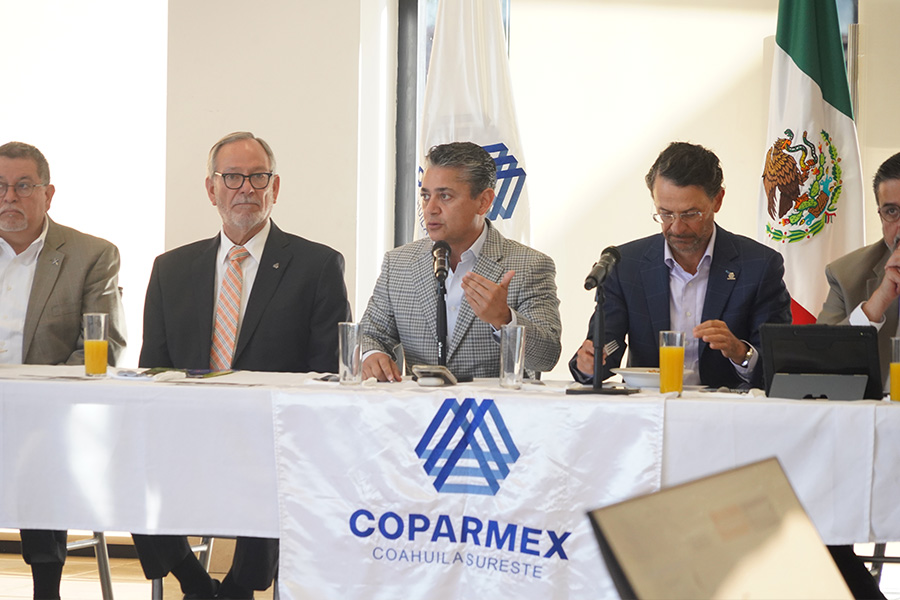
Comisiones del Pleno del Tribunal Superior de Justicia
Con el propósito de fortalecer el trabajo colegiado y hacer más eficiente la toma de decisiones, las magistradas y los magistrados que integran el Pleno del Tribunal Superior de Justicia del Estado participan de manera activa en comisiones especializadas. Estos espacios permiten atender con mayor precisión y oportunidad las diversas responsabilidades que corresponden al Poder Judicial, desde el ámbito jurisdiccional hasta las tareas administrativas y de gobierno judicial.
La integración en comisiones favorece una distribución estratégica de funciones, impulsa la coordinación interna y propicia un análisis técnico y especializado de los asuntos que se abordan. De esta manera, se consolida una dinámica de trabajo ordenada y colaborativa que fortalece la institución y contribuye a ofrecer una impartición de justicia más eficaz, cercana y acorde a las necesidades de las y los coahuilenses.
Dentro de las actividades realizadas por las diferentes comisiones, está la realización de diversas actividades encaminadas a la próxima implementación del Nuevo Código Nacional de Procedimientos Civiles y Familiares. Estas actividades formativas buscan consolidar conocimientos y preparar al personal jurisdiccional ante los cambios normativos que marcarán una nueva etapa en la impartición de justicia.
Asimismo, desde la Comisión de Igualdad de Género, impulsamos acciones para fortalecer las estrategias y líneas de trabajo que aseguren a las mujeres, y a sus hijas e hijos, un acceso igualitario y efectivo a la justicia.
Nuevo Modelo de Gestión Judicial
Durante 2025, el Poder Judicial del Estado de Coahuila, en coordinación con Fortis Consultoría, llevamos a cabo un proceso integral de preparación para la entrada en operación de la nueva Ciudad Judicial de Saltillo en 2026. Este esfuerzo tuvo como propósito principal asegurar una transición ordenada, responsable y centrada en mejorar el servicio de justicia para la ciudadanía.
A lo largo del año, diseñamos e implementamos de manera gradual un nuevo modelo de gestión para las materias civil, familiar, mercantil y laboral. Este modelo fue construido con la participación activa de magistradas, magistrados, juezas, jueces, personal jurisdiccional y áreas administrativas, lo que permitió generar acuerdos, homologar criterios y definir procesos claros antes del cambio de sede, con el objetivo de mejorar la eficiencia operativa y la calidad del servicio jurisdiccional y no jurisdiccional.
El plan de transición propone un modelo escalonado de implementación por materias, pensado para avanzar por fases, reducir riesgos y permitir que cada materia reciba la atención necesaria antes de avanzar a la siguiente etapa. Focalizando así los recursos humanos y técnicos en cada fase, priorizando niveles de complejidad y la mejora continua de las personas involucradas. Dicho documento contiene metodologías, herramientas y mejores prácticas necesarias para avanzar en la transición.
Uno de los avances más relevantes fue la implementación del modelo en la materia laboral, que hoy ya se encuentra en operación y funciona como base para el resto de las materias. Asimismo, se lograron avances significativos en la estandarización de formatos, la organización del trabajo interno, la reducción de rezagos y la planeación del personal conforme a cargas reales de trabajo.
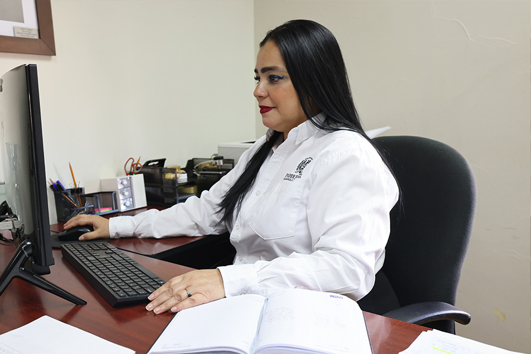
De manera paralela, fortalecimos la coordinación entre áreas jurisdiccionales y no jurisdiccionales, así como el desarrollo de herramientas tecnológicas que permitirán una gestión más eficiente, transparente y ordenada de los asuntos judiciales en la Ciudad Judicial de Saltillo.
Este proceso no solo implicó cambios administrativos, sino también un ejercicio de diálogo, capacitación y acompañamiento permanente, orientado a que el personal cuente con las herramientas necesarias para adaptarse al nuevo modelo sin afectar la continuidad del servicio.
El trabajo realizado permite afirmar que la institución se encuentra mejor preparada, más coordinada y enfocada en ofrecer una justicia más ágil, eficiente y cercana a quienes acuden diariamente a los juzgados en busca de justicia.
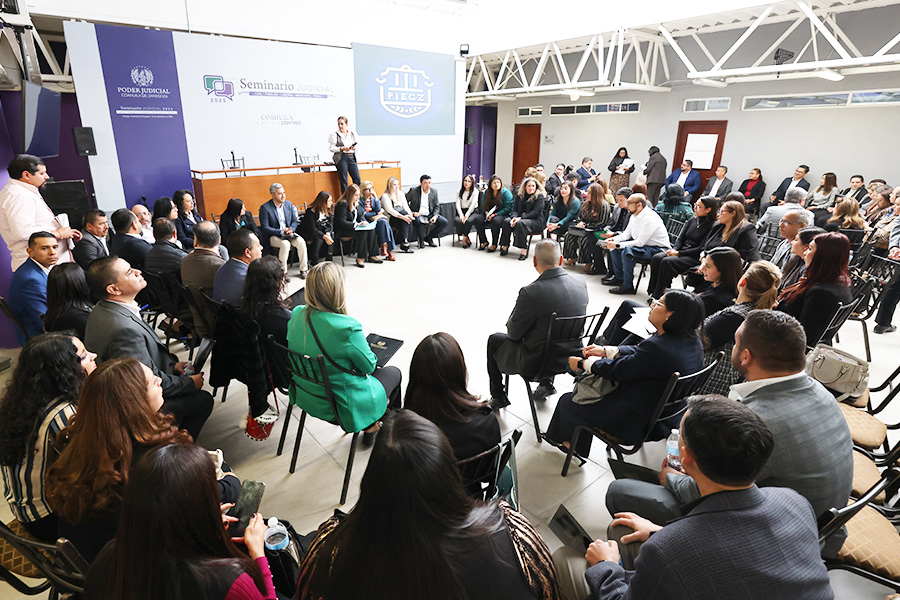
| ENERO |
|---|
| · Inicio del Plan de Transición para las materias civil, familiar, mercantil y laboral. |
| · Reuniones estratégicas con Magistraturas, personas juzgadoras de primera instancia y áreas clave del Tribunal Superior de Justicia. |
| · Visita a Ciudad Judicial para generar un entendimiento espacial de cómo será la nueva operación de los juzgados. |
| FEBRERO Y MARZO |
| · Consolidamos una Carta Gantt, que ordena actividades, tiempos y responsables. |
| · Realizamos una encuesta de percepción dirigida a personas litigantes |
| ABRIL Y MAYO |
| · En materia laboral: definimos la estructura jurisdiccional que operará en la Ciudad judicial. |
| · En materia mercantil: construimos un proyecto de formatos estandarizados para autos y resoluciones del Juzgado Único Mercantil. |
| · Socializamos y difundimos el Modelo de Gestión y el cronograma de transición con el Instituto de Defensoría Pública, Centro de Evaluación Psicosocial y el Centro de Medios Alternos de Solución de Controversias. |
| JUNIO Y JULIO |
| · Visitas guiadas a Ciudad Judicial. |
| · En materia laboral: Comenzamos la operación del modelo de gestión conforme al manual diseñado y se implementó el modelo de volumetría laboral, para estimar cargas de trabajo y distribución del personal. |
| · En materia mercantil: Homologación de criterios y la validación de formatos estandarizados para acuerdos y resoluciones. |
| AGOSTO |
| · Seguimiento al Sistema Administrativo de Justicia Inteligente (SAJI). |
| · En materia civil: Iniciamos la socialización del modelo de gestión con juezas y jueces; dimos inicio a la homologación de criterios y validación de formatos estandarizados para acuerdos y resoluciones. |
| · En materia mercantil: Iniciamos el abatimiento de rezago de los juzgados. |
| SEPTIEMBRE |
| · En materia civil: Avanzamos en la homologación y validación de criterios y formatos; y desarrollamos el taller estratégico para la clasificación de cargas de trabajo. |
| · En materia familiar: Realizamos el taller estratégico para la clasificación de cargas de trabajo; y capacitamos a secretarias y secretarios en el uso de la herramienta de registro de audiencias |
| · En materia laboral: Continuamos con el monitoreo y seguimiento puntual para evaluar el avance de la implementación del modelo. |
| · En materia mercantil: Revisamos los avances del equipo de abatimiento de rezago; y se designó al primer Juez coordinador, con quien se trabajará los talleres de simulación y la gestión del cambio. |
| OCTUBRE |
| · En materia civil: Activamos la herramienta de registro de audiencias e iniciamos con el modelo de volumetría, para definir personal y recursos. |
| · En materia familiar: Arrancamos con la homologación de formatos y reforzamos el equipo de abatimiento de rezago de los juzgados. |
| · En materia laboral: Continuamos con la operación del nuevo modelo bajo la supervisión de la nueva Coordinación. |
| · En materia mercantil: Realizamos talleres prácticos con todo el personal recreando el funcionamiento real del nuevo modelo. |
| NOVIEMBRE |
| · Realizamos capacitaciones a Agentes de Cambio y un taller dinámico con la participación del Magistrado Presidente. |
| · En materia civil y mercantil: Continuamos con las reuniones de seguimiento del abatimiento de rezago. |
| · En materia familiar: Iniciamos con la planeación del modelo de volumetría. |
| · En materia laboral: Instalamos el Comité de Juezas y Jueces, clave para la homologación de criterios. |
| DICIEMBRE |
| · Realizamos el Taller de Resultados de Abatimiento de Rezago |
| · Instalamos el Comité Operativo y se celebraron dos sesiones. |
| · En materia civil y familiar: Desarrollamos los modelos de volumetría. |
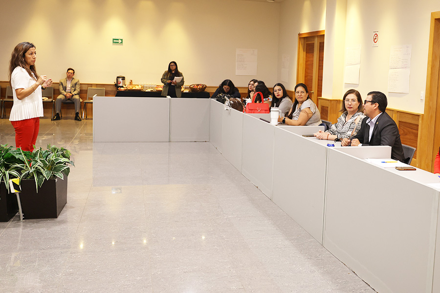
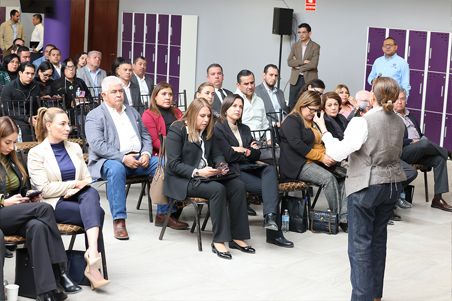
Unidad Jurídica
Durante 2025, trabajamos con el objetivo de fortalecer la institución y aumentar la confianza ciudadana, al atender, representar, tramitar, asesorar y apoyar en los asuntos jurídicos o en los procedimientos del orden judicial y administrativo, salvaguardando los intereses de este poder público. Asimismo, contribuimos al fomento y promoción de la cultura jurídica con la adecuada formalización de las relaciones contractuales que signa el Poder Judicial de Coahuila, y el cumplimiento de la normativa en cuanto a los procesos de licitaciones públicas, contratos de suministros y servicios.
Uno de los ejes centrales de este trabajo fue la defensa jurídica del Poder Judicial. A lo largo del año atendimos 75 expedientes de amparo, en los que la intervención de la Unidad fue constante y puntual. Desde la elaboración de informes justificados hasta el seguimiento de audiencias, resoluciones y su debida ejecución, cada actuación se condujo con apego a la ley, permitiendo proteger los derechos e intereses institucionales y reforzar el respeto al Estado de Derecho.
De manera paralela, impulsamos una gestión ordenada y transparente en materia contractual. La elaboración, revisión y formalización de 80 contratos en distintas modalidades dio certeza a las relaciones jurídicas del Poder Judicial. Los contratos respecto a arrendamientos, servicios asimilados a salarios y convenios específicos de colaboración con otras instituciones fueron atendidos bajo criterios de claridad, legalidad y responsabilidad administrativa, fortaleciendo los vínculos institucionales y el uso eficiente de los recursos públicos.
Mientras que, el ámbito laboral también recibió atención prioritaria. Actualmente, contamos con 21 asuntos en trámite, procurando que cada uno de ellos se atienda con apego a la normativa vigente y en equilibrio a los derechos de este poder público y de su personal. La representación en audiencias y la conducción de procesos de conciliación permitieron encauzar los conflictos con profesionalismo y sensibilidad, privilegiando soluciones que favorecieran la estabilidad laboral y el buen funcionamiento del Poder Judicial.